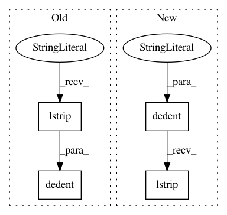

ff5d2b42c4184505b4417aadba25c499b05c1e8c,tensorboard/manager_e2e_test.py,ManagerEndToEndTest,test_exit_success,#ManagerEndToEndTest#,244
Before Change
self.skipTest("Requires a POSIX shell for the stub script.")
self._stub_tensorboard(
name="fail-with-0",
program=textwrap.dedent(
r
//!/bin/sh
printf >&2 "info: something good happened\n"
printf "also some standard output\n"
exit 0
.lstrip(),
),
)
start_result = manager.start(["--logdir=./logs", "--port=0"])
self.assertIsInstance(start_result, manager.StartFailed)
After Change
self.skipTest("Requires a POSIX shell for the stub script.")
self._stub_tensorboard(
name="fail-with-0",
program=textwrap.dedent(
r
//!/bin/sh
printf >&2 "info: something good happened\n"
printf "also some standard output\n"
exit 0
).lstrip(),
)
start_result = manager.start(["--logdir=./logs", "--port=0"])
self.assertIsInstance(start_result, manager.StartFailed)
In pattern: SUPERPATTERN
Frequency: 3
Non-data size: 4
Instances
Project Name: tensorflow/tensorboard
Commit Name: ff5d2b42c4184505b4417aadba25c499b05c1e8c
Time: 2019-12-18
Author: wchargin@gmail.com
File Name: tensorboard/manager_e2e_test.py
Class Name: ManagerEndToEndTest
Method Name: test_exit_success
Project Name: tensorflow/tensorboard
Commit Name: ff5d2b42c4184505b4417aadba25c499b05c1e8c
Time: 2019-12-18
Author: wchargin@gmail.com
File Name: tensorboard/manager_e2e_test.py
Class Name: ManagerEndToEndTest
Method Name: test_tensorboard_binary_environment_variable
Project Name: tensorflow/tensorboard
Commit Name: ff5d2b42c4184505b4417aadba25c499b05c1e8c
Time: 2019-12-18
Author: wchargin@gmail.com
File Name: tensorboard/manager_e2e_test.py
Class Name: ManagerEndToEndTest
Method Name: test_exit_failure